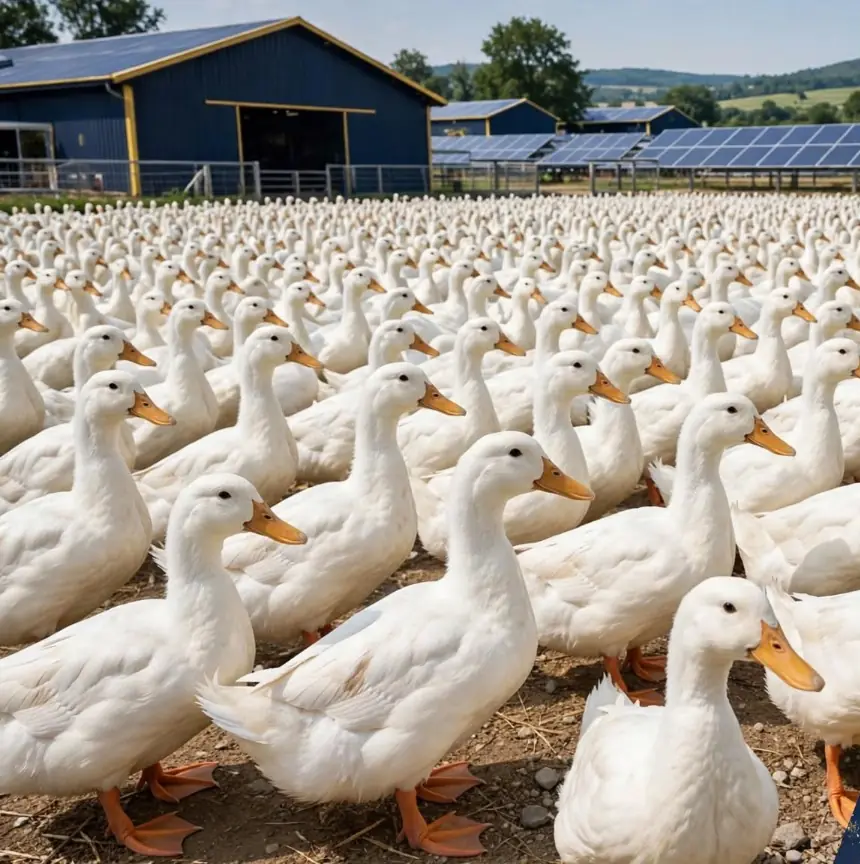
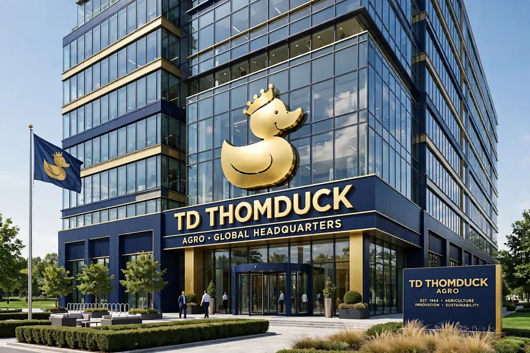

THOMDUCK
POULTRY
FARMING
A Multinational Global Agro Farm Company - Growth That Flies Higher
Specializing in farm birds, precisely ducks. With partners across 144 countries, we deliver sustainable protein through heritage-backed farming, advanced biosecurity, and solar-powered operations.
Sustainable Protein,
Built to Scale Globally
Thomduck is a multinational global agro farm company built on sustainable protein. According to the company, founded with backing from agricultural heritage families in Asia, with co-owners and strategic partners across Europe, Africa, North America, South America, and Australia.
Our network spans partners and investors in up to 144 countries. We specialize in farm birds, precisely ducks — combining traditional husbandry knowledge with modern biosecurity, solar energy, and export-grade logistics to deliver consistent, high-quality protein.
